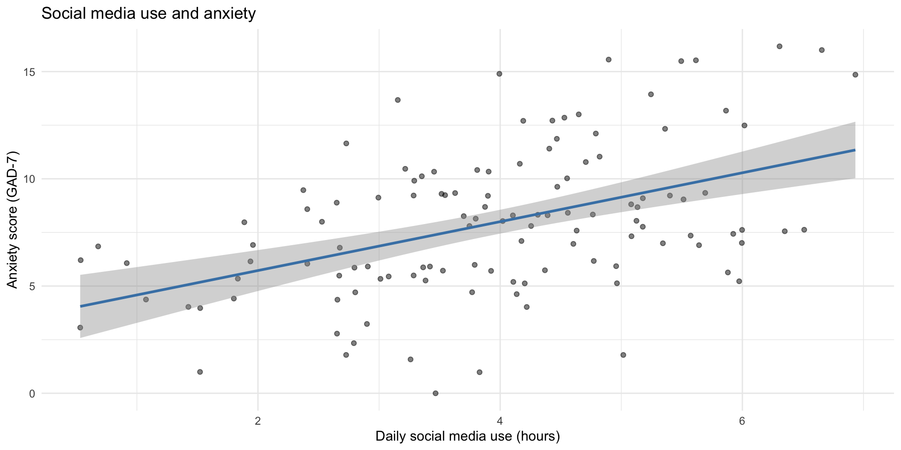
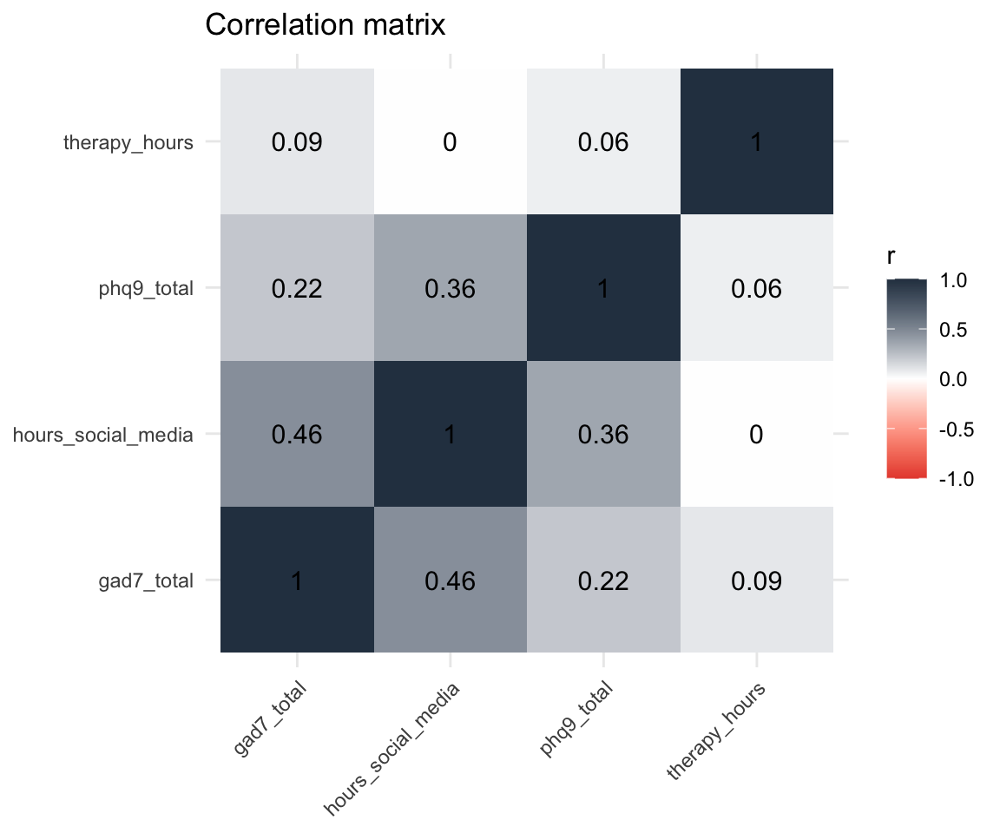
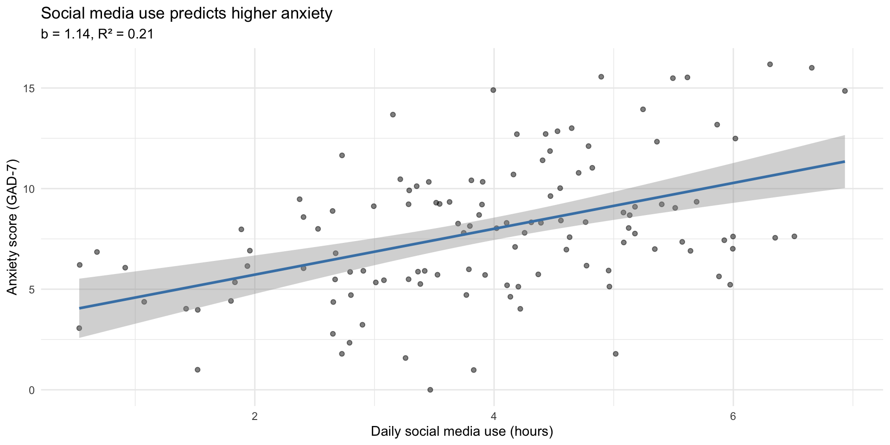

cor(study_data$hours_social_media, study_data$gad7_total)[1] 0.4613455PSY 410: Data Science for Psychology
2026-06-01
Today you learn to put a number on that pattern.
Correlation measures the strength and direction. Regression draws the line.
Correlation (r) quantifies the linear relationship between two variables.
| Value of r | Interpretation |
|---|---|
| r = 1.0 | Perfect positive |
| r = 0.7 | Strong positive |
| r = 0.3 | Weak positive |
| r = 0.0 | No linear relationship |
| r = -0.3 | Weak negative |
| r = -0.7 | Strong negative |
| r = -1.0 | Perfect negative |
Key: r tells you direction and strength, not causation.
That’s it. One function, two variables, one number.
Every time you wrote geom_smooth(method = "lm"), you were fitting a line through the data.

Pearson's product-moment correlation
data: study_data$hours_social_media and study_data$gad7_total
t = 5.6485, df = 118, p-value = 1.138e-07
alternative hypothesis: true correlation is not equal to 0
95 percent confidence interval:
0.3075349 0.5916611
sample estimates:
cor
0.4613455 What to report: r, p-value, and 95% confidence interval.
study_data |>
select(hours_social_media, gad7_total, phq9_total, therapy_hours) |>
cor(use = "complete.obs") |>
round(2) hours_social_media gad7_total phq9_total therapy_hours
hours_social_media 1.00 0.46 0.36 0.00
gad7_total 0.46 1.00 0.22 0.09
phq9_total 0.36 0.22 1.00 0.06
therapy_hours 0.00 0.09 0.06 1.00Each cell is the correlation between the row variable and the column variable. The diagonal is always 1 (a variable correlates perfectly with itself).
cor_matrix <- study_data |>
select(hours_social_media, gad7_total, phq9_total, therapy_hours) |>
cor(use = "complete.obs")
# Manual heatmap with ggplot
cor_matrix |>
as.data.frame() |>
rownames_to_column("var1") |>
pivot_longer(-var1, names_to = "var2", values_to = "r") |>
ggplot(aes(x = var1, y = var2, fill = r)) +
geom_tile() +
geom_text(aes(label = round(r, 2)), size = 4) +
scale_fill_gradient2(low = "#e74c3c", mid = "white", high = "#2c3e50",
midpoint = 0, limits = c(-1, 1)) +
labs(title = "Correlation matrix", x = NULL, y = NULL) +
theme_minimal() +
theme(axis.text.x = element_text(angle = 45, hjust = 1))
| Correlation | Why it’s not causal |
|---|---|
| Ice cream sales & drowning deaths | Both increase in summer (confound: temperature) |
| Shoe size & reading ability | Both increase with age (confound: development) |
| Social media & anxiety | Anxious people may seek social media for comfort (reverse causation) |
To establish causation, you need an experiment — random assignment, manipulation, control group. Correlation from observational data tells you variables are related, not that one causes the other.
Using the study_data dataset (already loaded):
therapy_hours and depression_postcor.test() — is the correlation significant?Time: 10 minutes
Tip
Negative correlation means as one variable goes up, the other goes down. Think about what that means for therapy and depression.
Upload your code to Canvas for participation credit. Paste what you have into today’s in-class submission — it doesn’t need to work perfectly.
Correlation tells you the relationship exists and how strong it is.
Regression goes further — it gives you an equation to predict one variable from another.
The equation: y = b0 + b1 * x
Read this as: “Predict anxiety (gad7_total) from social media use (hours_social_media).”
The ~ means “predicted by.”
Call:
lm(formula = gad7_total ~ hours_social_media, data = study_data)
Residuals:
Min 1Q Median 3Q Max
-7.3946 -2.0579 -0.2734 2.3845 6.9013
Coefficients:
Estimate Std. Error t value Pr(>|t|)
(Intercept) 3.4445 0.8437 4.083 8.13e-05 ***
hours_social_media 1.1395 0.2017 5.649 1.14e-07 ***
---
Signif. codes: 0 '***' 0.001 '**' 0.01 '*' 0.05 '.' 0.1 ' ' 1
Residual standard error: 3.074 on 118 degrees of freedom
Multiple R-squared: 0.2128, Adjusted R-squared: 0.2062
F-statistic: 31.91 on 1 and 118 DF, p-value: 1.138e-07| Term | Estimate | p-value | In plain language |
|---|---|---|---|
| (Intercept) | 3.445 | 0 | Predicted anxiety when social media = 0 hours |
| hours_social_media | 1.139 | 0 | For each additional hour of social media, anxiety increases by this much |
In a sentence: For each additional hour of daily social media use, anxiety scores increase by about 1.1 points on the GAD-7.
R-squared tells you the proportion of variation in y explained by x.
The other 79% is explained by other factors (genetics, life events, personality, etc.).
ggplot(study_data, aes(x = hours_social_media, y = gad7_total)) +
geom_point(alpha = 0.5) +
geom_smooth(method = "lm", color = "steelblue") +
labs(
title = "Social media use predicts higher anxiety",
subtitle = paste0("b = ", round(tidy(model)$estimate[2], 2),
", R² = ", round(glance(model)$r.squared, 2)),
x = "Daily social media use (hours)",
y = "Anxiety score (GAD-7)"
) +
theme_minimal()
The raw summary() output is hard to work with. broom::tidy() gives you a tidy data frame:
# A tibble: 2 × 5
term estimate std.error statistic p.value
<chr> <dbl> <dbl> <dbl> <dbl>
1 (Intercept) 3.44 0.844 4.08 0.0000813
2 hours_social_media 1.14 0.202 5.65 0.000000114| r.squared | adj.r.squared | sigma | p.value |
|---|---|---|---|
| 0.213 | 0.206 | 3.074 | 0 |
The workflow you now know:
cor() to measure strength and directionlm() to get the equation and test significancebroom::tidy() + knitr::kable() for clean tablesThis is what researchers do. You now have the tools.
Today you learned simple regression — one predictor, one outcome.
Real research often uses:
lm(y ~ x1 + x2 + x3))aov(y ~ group))All of these build on lm(). The syntax is nearly identical.
The hard part — learning R, wrangling data, making visualizations — is done.
Using the study_data dataset:
phq9_total (depression) from hours_social_mediabroom::tidy() to create a clean results tableNo new reading — focus on your final project!
Do:
The pattern you see in a scatterplot and the numbers from lm() are telling you the same story — one with your eyes, one with math.
PSY 410 | Session 17